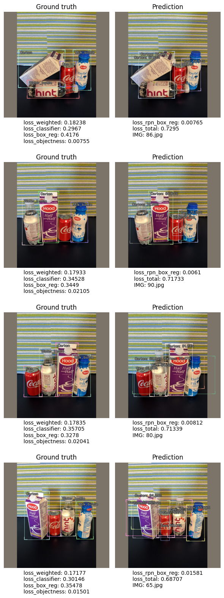

The purpose of this notebook is to showcase the newly added plot_top_losses functionality, which allows users to inspect models' results by plotting images sorted by various combinations of losses. This API makes it easy to immediately spot pictures the model struggles the most with, giving the practitioner the opportunity to take swift action to correct this behaviour (remove wrong samples, correct mis-labellings, etc).
plot_top_losses is available for all IceVision models, as the below notebook shows.
Install IceVision
Install from pypi...
# Torch - Torchvision - IceVision - IceData - MMDetection - YOLOv5 - EfficientDet Installation
!wget https://raw.githubusercontent.com/airctic/icevision/master/icevision_install.sh
# Choose your installation target: cuda11 or cuda10 or cpu
!bash icevision_install.sh cuda11
... or from icevision master
# # Torch - Torchvision - IceVision - IceData - MMDetection - YOLOv5 - EfficientDet Installation
# !wget https://raw.githubusercontent.com/airctic/icevision/master/icevision_install.sh
# # Choose your installation target: cuda11 or cuda10 or cpu
# !bash icevision_install.sh cuda11 master
# Restart kernel after installation
import IPython
IPython.Application.instance().kernel.do_shutdown(True)
Object Detection
Load fridge dataset
from icevision.all import *
# Loading Data
url = "https://cvbp-secondary.z19.web.core.windows.net/datasets/object_detection/odFridgeObjects.zip"
dest_dir = "fridge"
data_dir = icedata.load_data(url, dest_dir)
# Parser
class_map = ClassMap(["milk_bottle", "carton", "can", "water_bottle"])
parser = parsers.voc(annotations_dir=data_dir / "odFridgeObjects/annotations",
images_dir=data_dir / "odFridgeObjects/images",
class_map=class_map)
# Records
train_records, valid_records = parser.parse()
# Transforms
train_tfms = tfms.A.Adapter([*tfms.A.aug_tfms(size=384, presize=512), tfms.A.Normalize()])
valid_tfms = tfms.A.Adapter([*tfms.A.resize_and_pad(384), tfms.A.Normalize()])
# Datasets
train_ds = Dataset(train_records, train_tfms)
valid_ds = Dataset(valid_records, valid_tfms)
model_type = models.torchvision.faster_rcnn
backbone = model_type.backbones.resnet50_fpn
# DataLoaders
train_dl = model_type.train_dl(train_ds, batch_size=16, num_workers=4, shuffle=True)
valid_dl = model_type.valid_dl(valid_ds, batch_size=1, num_workers=4, shuffle=False)
[1m[1mINFO [0m[1m[0m - [1mThe mmdet config folder already exists. No need to downloaded it. Path : /home/ubuntu/.icevision/mmdetection_configs/mmdetection_configs-2.16.0/configs[0m | [36micevision.models.mmdet.download_configs[0m:[36mdownload_mmdet_configs[0m:[36m17[0m
[33m[1m[1mWARNING [0m[33m[1m[0m - [33m[1mThis function will be deprecated, instantiate the concrete classes instead: `VOCBBoxParser`, `VOCMaskParser`[0m | [36micevision.parsers.voc_parser[0m:[36mvoc[0m:[36m17[0m
0%| | 0/128 [00:00<?, ?it/s]
[1m[1mINFO [0m[1m[0m - [1m[34m[1mAutofixing records[0m[1m[34m[0m[1m[0m | [36micevision.parsers.parser[0m:[36mparse[0m:[36m122[0m
0%| | 0/128 [00:00<?, ?it/s]
Train faster_rcnn model
model = model_type.model(backbone=backbone(pretrained=True), num_classes=len(parser.class_map))
metrics = [COCOMetric(metric_type=COCOMetricType.bbox)]
learn = model_type.fastai.learner(dls=[train_dl, valid_dl], model=model, metrics=metrics)
learn.fine_tune(10, 1e-2, freeze_epochs=1)
| epoch | train_loss | valid_loss | COCOMetric | time |
|---|---|---|---|---|
| 0 | 3.995082 | 1.145674 | 0.000057 | 00:09 |
/home/ubuntu/anaconda3/envs/ice/lib/python3.8/site-packages/torch/functional.py:445: UserWarning: torch.meshgrid: in an upcoming release, it will be required to pass the indexing argument. (Triggered internally at ../aten/src/ATen/native/TensorShape.cpp:2157.)
return _VF.meshgrid(tensors, **kwargs) # type: ignore[attr-defined]
| epoch | train_loss | valid_loss | COCOMetric | time |
|---|---|---|---|---|
| 0 | 1.193951 | 1.648449 | 0.032289 | 00:13 |
| 1 | 0.985826 | 0.735072 | 0.000160 | 00:10 |
| 2 | 0.924974 | 0.794665 | 0.018933 | 00:10 |
| 3 | 0.893960 | 0.844737 | 0.052620 | 00:10 |
| 4 | 0.893976 | 0.812259 | 0.183922 | 00:11 |
| 5 | 0.880687 | 0.681532 | 0.173614 | 00:09 |
| 6 | 0.858650 | 0.665555 | 0.247655 | 00:10 |
| 7 | 0.818621 | 0.510320 | 0.337507 | 00:10 |
| 8 | 0.776634 | 0.518227 | 0.360398 | 00:10 |
| 9 | 0.736172 | 0.486833 | 0.372902 | 00:09 |
Run top_plot_losses on faster_rcnn model results
Values allowed to pass to sort_by are (for faster_rcnn):
"loss_classifier""loss_box_reg""loss_objectness""loss_rpn_box_reg""loss_total"(sum of the previous 4 losses){"method": "weighted", "weights": {"loss_box_reg": 0.25, "loss_classifier": 0.25, "loss_objectness": 0.25, "loss_rpn_box_reg": 0.25,}}(calculates weighted sum of the 4 losses - Note: I have set weights to0.25for example purposes)
Below we show several ways of invoking the same API on the trained model, sorting samples by different losses combinations.
samples_plus_losses, preds, losses_stats = model_type.interp.plot_top_losses(model=model, dataset=valid_ds, sort_by="loss_total", n_samples=4)
[1m[1mINFO [0m[1m[0m - [1mLosses returned by model: ['loss_classifier', 'loss_box_reg', 'loss_objectness', 'loss_rpn_box_reg'][0m | [36micevision.models.interpretation[0m:[36mplot_top_losses[0m:[36m218[0m
0%| | 0/26 [00:00<?, ?it/s]
0%| | 0/4 [00:00<?, ?it/s]

samples_plus_losses, preds, losses_stats = model_type.interp.plot_top_losses(model=model, dataset=valid_ds, sort_by="loss_classifier", n_samples=4)
[1m[1mINFO [0m[1m[0m - [1mLosses returned by model: ['loss_classifier', 'loss_box_reg', 'loss_objectness', 'loss_rpn_box_reg'][0m | [36micevision.models.interpretation[0m:[36mplot_top_losses[0m:[36m218[0m
0%| | 0/26 [00:00<?, ?it/s]
0%| | 0/4 [00:00<?, ?it/s]

# in this case `loss_weighted` will be equal to `loss_box_reg`
by = {
"method": "weighted",
"weights": {
"loss_box_reg": 1,
"loss_classifier": 0,
"loss_objectness": 0,
"loss_rpn_box_reg": 0,
},
}
samples_plus_losses, preds, losses_stats = model_type.interp.plot_top_losses(model=model, dataset=valid_ds, sort_by=by, n_samples=4)
[1m[1mINFO [0m[1m[0m - [1mLosses returned by model: ['loss_classifier', 'loss_box_reg', 'loss_objectness', 'loss_rpn_box_reg'][0m | [36micevision.models.interpretation[0m:[36mplot_top_losses[0m:[36m218[0m
0%| | 0/26 [00:00<?, ?it/s]
0%| | 0/4 [00:00<?, ?it/s]

by = {
"method": "weighted",
"weights": {
"loss_box_reg": 0.25,
"loss_classifier": 0.25,
"loss_objectness": 0.25,
"loss_rpn_box_reg": 0.25,
},
}
samples_plus_losses, preds, losses_stats = model_type.interp.plot_top_losses(model=model, dataset=valid_ds, sort_by=by, n_samples=4)
[1m[1mINFO [0m[1m[0m - [1mLosses returned by model: ['loss_classifier', 'loss_box_reg', 'loss_objectness', 'loss_rpn_box_reg'][0m | [36micevision.models.interpretation[0m:[36mplot_top_losses[0m:[36m218[0m
0%| | 0/26 [00:00<?, ?it/s]
0%| | 0/4 [00:00<?, ?it/s]

# `losses_stats` contains useful statistics for each computed loss in the dataset
losses_stats
# we can easily extract losses per image and display them in a pandas DataFrame for further analysis
import pandas as pd
from icevision.models.interpretation import get_samples_losses
loss_per_image = get_samples_losses(samples_plus_losses)
pd.DataFrame(loss_per_image)
{'loss_classifier': {'min': 0.06532751768827438,
'max': 0.3570514917373657,
'mean': 0.22153257807860008,
'1ile': 0.06532751768827438,
'25ile': 0.17143525183200836,
'50ile': 0.23105227947235107,
'75ile': 0.2811724841594696,
'99ile': 0.3570514917373657},
'loss_box_reg': {'min': 0.04955608770251274,
'max': 0.41760146617889404,
'mean': 0.24227395410147998,
'1ile': 0.04955608770251274,
'25ile': 0.16739314794540405,
'50ile': 0.23787736147642136,
'75ile': 0.3278003931045532,
'99ile': 0.41760146617889404},
'loss_objectness': {'min': 0.0017869938164949417,
'max': 0.10180316120386124,
'mean': 0.016076406804271616,
'1ile': 0.0017869938164949417,
'25ile': 0.007386505138128996,
'50ile': 0.010415146127343178,
'75ile': 0.018654515966773033,
'99ile': 0.10180316120386124},
'loss_rpn_box_reg': {'min': 0.001359554473310709,
'max': 0.02417410910129547,
'mean': 0.008536153078938905,
'1ile': 0.001359554473310709,
'25ile': 0.0056922342628240585,
'50ile': 0.007792716380208731,
'75ile': 0.010672150179743767,
'99ile': 0.02417410910129547},
'loss_total': {'min': 0.11875081108883023,
'max': 0.7295006141066551,
'mean': 0.4884190920632906,
'1ile': 0.11875081108883023,
'25ile': 0.3626828184351325,
'50ile': 0.5204635132104158,
'75ile': 0.6233997480012476,
'99ile': 0.7295006141066551}}
| loss_classifier | loss_box_reg | loss_objectness | loss_rpn_box_reg | loss_total | loss_weighted | filepath | |
|---|---|---|---|---|---|---|---|
| 0 | 0.296700 | 0.417601 | 0.007554 | 0.007645 | 0.729501 | 0.182375 | /home/ubuntu/.icevision/data/fridge/odFridgeObjects/images/86.jpg |
| 1 | 0.345282 | 0.344900 | 0.021045 | 0.006102 | 0.717329 | 0.179332 | /home/ubuntu/.icevision/data/fridge/odFridgeObjects/images/90.jpg |
| 2 | 0.357051 | 0.327800 | 0.020415 | 0.008122 | 0.713388 | 0.178347 | /home/ubuntu/.icevision/data/fridge/odFridgeObjects/images/80.jpg |
| 3 | 0.301462 | 0.354785 | 0.015013 | 0.015807 | 0.687068 | 0.171767 | /home/ubuntu/.icevision/data/fridge/odFridgeObjects/images/65.jpg |
| 4 | 0.232049 | 0.370708 | 0.019768 | 0.010672 | 0.633197 | 0.158299 | /home/ubuntu/.icevision/data/fridge/odFridgeObjects/images/41.jpg |
| 5 | 0.296007 | 0.310065 | 0.014165 | 0.008247 | 0.628484 | 0.157121 | /home/ubuntu/.icevision/data/fridge/odFridgeObjects/images/81.jpg |
| 6 | 0.211539 | 0.393251 | 0.011715 | 0.006894 | 0.623400 | 0.155850 | /home/ubuntu/.icevision/data/fridge/odFridgeObjects/images/87.jpg |
| 7 | 0.271977 | 0.331191 | 0.012193 | 0.007269 | 0.622630 | 0.155657 | /home/ubuntu/.icevision/data/fridge/odFridgeObjects/images/48.jpg |
| 8 | 0.281172 | 0.282685 | 0.026252 | 0.014193 | 0.604303 | 0.151076 | /home/ubuntu/.icevision/data/fridge/odFridgeObjects/images/37.jpg |
| 9 | 0.260208 | 0.324138 | 0.008174 | 0.011745 | 0.604265 | 0.151066 | /home/ubuntu/.icevision/data/fridge/odFridgeObjects/images/74.jpg |
| 10 | 0.278057 | 0.261131 | 0.018655 | 0.007381 | 0.565223 | 0.141306 | /home/ubuntu/.icevision/data/fridge/odFridgeObjects/images/28.jpg |
| 11 | 0.235263 | 0.310668 | 0.002415 | 0.007940 | 0.556287 | 0.139072 | /home/ubuntu/.icevision/data/fridge/odFridgeObjects/images/46.jpg |
| 12 | 0.299006 | 0.214321 | 0.009115 | 0.011385 | 0.533828 | 0.133457 | /home/ubuntu/.icevision/data/fridge/odFridgeObjects/images/36.jpg |
| 13 | 0.230056 | 0.258252 | 0.008532 | 0.010260 | 0.507099 | 0.126775 | /home/ubuntu/.icevision/data/fridge/odFridgeObjects/images/40.jpg |
| 14 | 0.220261 | 0.210022 | 0.007387 | 0.005692 | 0.443363 | 0.110841 | /home/ubuntu/.icevision/data/fridge/odFridgeObjects/images/115.jpg |
| 15 | 0.171435 | 0.145327 | 0.101803 | 0.024174 | 0.442740 | 0.110685 | /home/ubuntu/.icevision/data/fridge/odFridgeObjects/images/109.jpg |
| 16 | 0.233022 | 0.204496 | 0.003368 | 0.001360 | 0.442246 | 0.110562 | /home/ubuntu/.icevision/data/fridge/odFridgeObjects/images/47.jpg |
| 17 | 0.202497 | 0.217503 | 0.008341 | 0.010180 | 0.438521 | 0.109630 | /home/ubuntu/.icevision/data/fridge/odFridgeObjects/images/31.jpg |
| 18 | 0.206598 | 0.164179 | 0.051936 | 0.015769 | 0.438482 | 0.109621 | /home/ubuntu/.icevision/data/fridge/odFridgeObjects/images/25.jpg |
| 19 | 0.145833 | 0.187863 | 0.018361 | 0.010626 | 0.362683 | 0.090671 | /home/ubuntu/.icevision/data/fridge/odFridgeObjects/images/59.jpg |
| 20 | 0.118557 | 0.171712 | 0.002909 | 0.001784 | 0.294962 | 0.073740 | /home/ubuntu/.icevision/data/fridge/odFridgeObjects/images/127.jpg |
| 21 | 0.103582 | 0.167393 | 0.014592 | 0.006817 | 0.292384 | 0.073096 | /home/ubuntu/.icevision/data/fridge/odFridgeObjects/images/12.jpg |
| 22 | 0.180912 | 0.102142 | 0.002801 | 0.002640 | 0.288496 | 0.072124 | /home/ubuntu/.icevision/data/fridge/odFridgeObjects/images/19.jpg |
| 23 | 0.118964 | 0.102546 | 0.007565 | 0.004681 | 0.233756 | 0.058439 | /home/ubuntu/.icevision/data/fridge/odFridgeObjects/images/110.jpg |
| 24 | 0.097024 | 0.074887 | 0.002125 | 0.002476 | 0.176512 | 0.044128 | /home/ubuntu/.icevision/data/fridge/odFridgeObjects/images/100.jpg |
| 25 | 0.065328 | 0.049556 | 0.001787 | 0.002080 | 0.118751 | 0.029688 | /home/ubuntu/.icevision/data/fridge/odFridgeObjects/images/106.jpg |
Run top_plot_losses on a efficientdet pretrained (but not finetuned) model
extra_args = {}
model_type = models.ross.efficientdet
backbone = model_type.backbones.tf_lite0
# The efficientdet model requires an img_size parameter
extra_args['img_size'] = 384
model = model_type.model(backbone=backbone(pretrained=True), num_classes=len(parser.class_map), **extra_args)
sorted_samples, sorted_preds, losses_stats = model_type.interp.plot_top_losses(model, valid_ds, sort_by="class_loss", n_samples=4)
[1m[1mINFO [0m[1m[0m - [1mLosses returned by model: ['effdet_total_loss', 'class_loss', 'box_loss'][0m | [36micevision.models.interpretation[0m:[36mplot_top_losses[0m:[36m218[0m
0%| | 0/26 [00:00<?, ?it/s]
0%| | 0/4 [00:00<?, ?it/s]
/home/ubuntu/anaconda3/envs/ice/lib/python3.8/site-packages/effdet/bench.py:45: UserWarning: __floordiv__ is deprecated, and its behavior will change in a future version of pytorch. It currently rounds toward 0 (like the 'trunc' function NOT 'floor'). This results in incorrect rounding for negative values. To keep the current behavior, use torch.div(a, b, rounding_mode='trunc'), or for actual floor division, use torch.div(a, b, rounding_mode='floor').
indices_all = cls_topk_indices_all // num_classes

Instance Segmentation
plot_top_losses in action with a mask_rcnn model on the pennfudan dataset
# Loading Data
data_dir = icedata.pennfudan.load_data()
parser = icedata.pennfudan.parser(data_dir)
# train_ds, valid_ds = icedata.pennfudan.dataset(data_dir)
train_rs, valid_rs = parser.parse()
# Transforms
image_size = 512
train_tfms = tfms.A.Adapter([*tfms.A.aug_tfms(size=image_size, presize=1024), tfms.A.Normalize()])
valid_tfms = tfms.A.Adapter([*tfms.A.resize_and_pad(image_size), tfms.A.Normalize()])
train_ds = Dataset(train_rs, train_tfms)
valid_ds = Dataset(valid_rs, valid_tfms)
model_type = models.mmdet.mask_rcnn
backbone = model_type.backbones.resnet50_fpn_1x()
# DataLoaders
train_dl = model_type.train_dl(train_ds, batch_size=4, num_workers=4, shuffle=True)
valid_dl = model_type.valid_dl(valid_ds, batch_size=4, num_workers=4, shuffle=False)
model = model_type.model(backbone=backbone, num_classes=icedata.pennfudan.NUM_CLASSES)
learn = model_type.fastai.learner(dls=[train_dl, valid_dl], model=model)
learn.fine_tune(10, 3e-4, freeze_epochs=2)
0%| | 0/170 [00:00<?, ?it/s]
[1m[1mINFO [0m[1m[0m - [1m[34m[1mAutofixing records[0m[1m[34m[0m[1m[0m | [36micevision.parsers.parser[0m:[36mparse[0m:[36m122[0m
0%| | 0/170 [00:00<?, ?it/s]
| epoch | train_loss | valid_loss | time |
|---|---|---|---|
| 0 | 1.950177 | 0.444139 | 00:32 |
| 1 | 0.936212 | 0.439992 | 00:28 |
/home/ubuntu/anaconda3/envs/ice/lib/python3.8/site-packages/mmdet/core/anchor/anchor_generator.py:324: UserWarning: ``grid_anchors`` would be deprecated soon. Please use ``grid_priors``
warnings.warn('``grid_anchors`` would be deprecated soon. '
/home/ubuntu/anaconda3/envs/ice/lib/python3.8/site-packages/mmdet/core/anchor/anchor_generator.py:360: UserWarning: ``single_level_grid_anchors`` would be deprecated soon. Please use ``single_level_grid_priors``
warnings.warn(
| epoch | train_loss | valid_loss | time |
|---|---|---|---|
| 0 | 0.374806 | 0.344675 | 00:27 |
| 1 | 0.347379 | 0.350029 | 00:27 |
| 2 | 0.336716 | 0.364372 | 00:25 |
| 3 | 0.329699 | 0.333309 | 00:28 |
| 4 | 0.315138 | 0.344930 | 00:27 |
| 5 | 0.308043 | 0.340804 | 00:27 |
| 6 | 0.289543 | 0.312908 | 00:27 |
| 7 | 0.278561 | 0.327445 | 00:26 |
| 8 | 0.266237 | 0.310647 | 00:25 |
| 9 | 0.262186 | 0.310190 | 00:26 |
sorted_samples, sorted_preds, losses_stats = model_type.interp.plot_top_losses(model, valid_ds, sort_by="loss_mask")
[1m[1mINFO [0m[1m[0m - [1mLosses returned by model: ['loss_rpn_cls', 'loss_rpn_bbox', 'loss_cls', 'loss_bbox', 'loss_mask'][0m | [36micevision.models.interpretation[0m:[36mplot_top_losses[0m:[36m218[0m
0%| | 0/34 [00:00<?, ?it/s]
0%| | 0/5 [00:00<?, ?it/s]

Keypoint Detection
plot_top_losses in action with a keypoint_rcnn model on the biwi dataset
model_type = models.torchvision.keypoint_rcnn
data_dir = icedata.biwi.load_data()
parser = icedata.biwi.parser(data_dir)
train_records, valid_records = parser.parse()
presize = 240
size = 120
valid_tfms = tfms.A.Adapter([*tfms.A.resize_and_pad(size), tfms.A.Normalize()])
train_tfms = tfms.A.Adapter([*tfms.A.aug_tfms(size=size, presize=presize, crop_fn=None), tfms.A.Normalize()])
train_ds = Dataset(train_records, train_tfms)
valid_ds = Dataset(valid_records, valid_tfms)
train_dl = model_type.train_dl(train_ds, batch_size=32, num_workers=4, shuffle=True)
valid_dl = model_type.valid_dl(train_ds, batch_size=32, num_workers=4, shuffle=False)
backbone = model_type.backbones.resnet18_fpn(pretrained=True)
model = model_type.model(backbone=backbone, num_keypoints=1)
learn = model_type.fastai.learner(dls=[train_dl, valid_dl], model=model)
learn.fine_tune(5, 1e-4, freeze_epochs=2)
0%| | 0/593774 [00:00<?, ?B/s]
0%| | 0/200 [00:00<?, ?it/s]
[1m[1mINFO [0m[1m[0m - [1m[34m[1mAutofixing records[0m[1m[34m[0m[1m[0m | [36micevision.parsers.parser[0m:[36mparse[0m:[36m122[0m
0%| | 0/200 [00:00<?, ?it/s]
| epoch | train_loss | valid_loss | time |
|---|---|---|---|
| 0 | 9.133101 | 7.838448 | 00:57 |
| 1 | 8.182481 | 6.926270 | 00:28 |
| epoch | train_loss | valid_loss | time |
|---|---|---|---|
| 0 | 6.294706 | 5.840428 | 00:46 |
| 1 | 5.892668 | 5.038722 | 00:25 |
| 2 | 5.503245 | 4.533072 | 00:27 |
| 3 | 5.199810 | 4.395931 | 00:28 |
| 4 | 4.986382 | 4.209587 | 00:22 |
sorted_samples, sorted_preds, losses_stats = model_type.interp.plot_top_losses(model, valid_ds, sort_by="loss_keypoint")
[1m[1mINFO [0m[1m[0m - [1mLosses returned by model: ['loss_classifier', 'loss_box_reg', 'loss_objectness', 'loss_rpn_box_reg', 'loss_keypoint'][0m | [36micevision.models.interpretation[0m:[36mplot_top_losses[0m:[36m218[0m
0%| | 0/40 [00:00<?, ?it/s]
0%| | 0/5 [00:00<?, ?it/s]